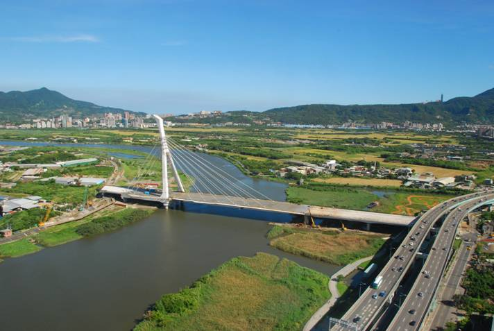
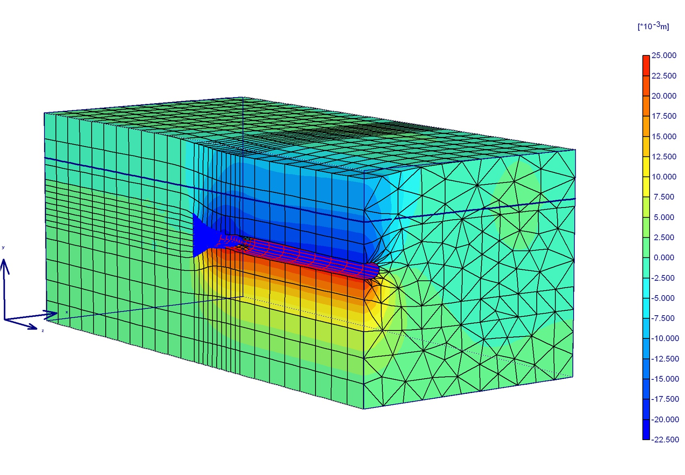
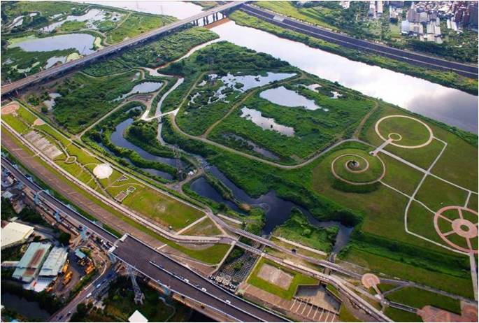
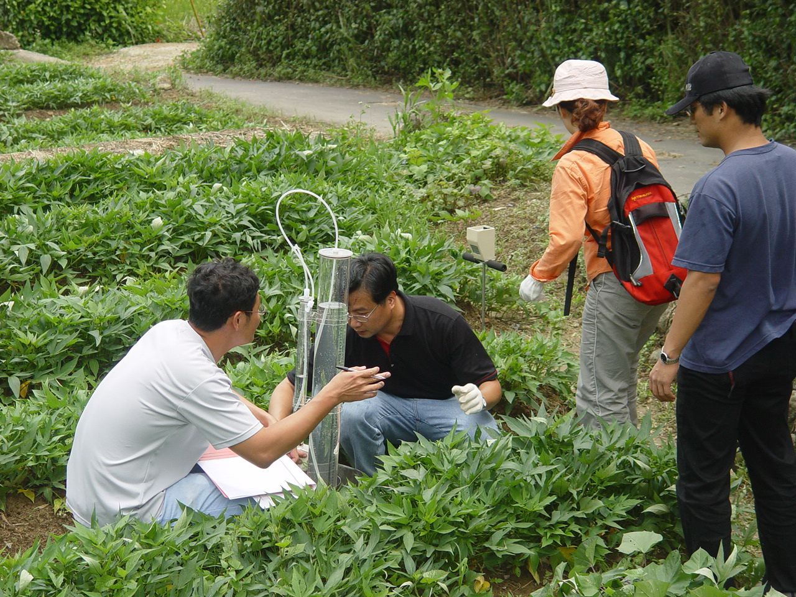
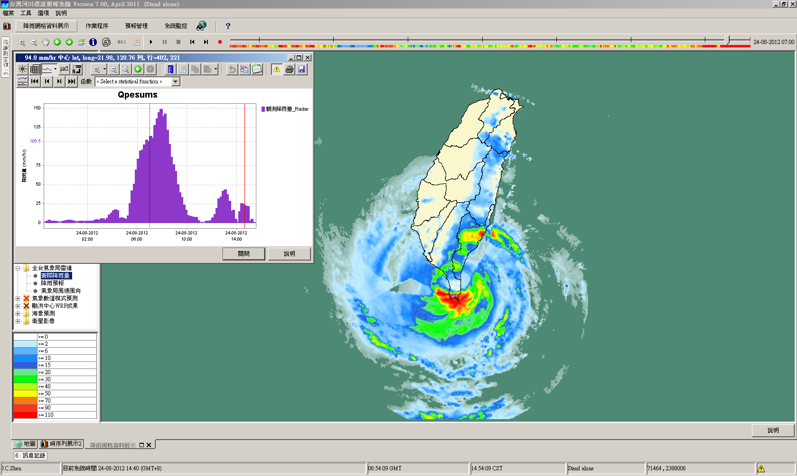

Department of Civil Engineering
Building the infrastructures for the next millennium.
Building the infrastructures for the next millennium.
Dear all students:
I would like to congratulate you for your outstanding performance in the entrance examination. I believe that everyone will benefit much from their period of study at National Taipei University of Technology and gained much knowledge not only from the professional field of civil engineering but also in everyday life.
Upon entering this program, you are already on the foundation set by the alumni and you also carry the responsibility to pass down a customs of excellence. Back in the early ages of 1912, the Japanese chair system established the School of Industrial Instruction and the civil program under it is the precursor of our current program. Our program established the "Graduate Institute of Civil and Disaster Prevention Engineering" in 1997, and the doctoral program of the "Graduate Institution of Engineering Technology" established the "Civil and Disaster Prevention Engineering Division" to further focus on in this research field.
The alumni have carried the responsibility for the welfare of the society and it is because of their exceptional performances that establish our terrific reputation. I wish you can carry on these excellent traditions.
With my best wishes,
Wen-I Liao
Department of Civil Engineering
Graduate Institute of Civil and Disaster Prevention Engineering
Dept. of Civil Engineering, NTUT
No.1, Sec. 3, Zhongxiao E. Rd., Da'an Dist.,
Taipei City 106, Taiwan R.O.C.
Tel: 886-2-2771-2171 Ext. 2600
Fax: 886-2-2781-4518
Teaching objectives
The content of the courses includes advanced theory of mechanics of structures and materials, analysis and design of structures, evaluation and strengthening of seismic capability and durability of structures, etc. The teaching stresses on both theory and practice and is implemented with computer software. The objective of teaching is to cultivate engineers with professional knowledge and practical capability, and to help them establish the basis of pursuing further education and self-learning.
Teaching objectives
Courses in geotechnical engineering program are designed to enhance, complement and strengthen the professional perspectives and practical skills of our graduates. The core courses offered are Soil Dynamics, Non-linear Mechanics, and Finite Element Method in Geotechnical Engineering, while courses such as, Slope Engineering and Cases study, Landslide Disaster and Prevention, Ground Improvement, Advanced Soil Mechanics, Soil/structure interaction, Advanced Rock Mechanics, and Rock Engineering are offered as elective courses. Emphasis is placed on both the theoretical and practical aspects and we are also closely working with a range of industry professional. The division has trained, cultivated and nurtured a large number geotechnical engineers with various specialized skills and technical backgrounds.
Teaching objectives
Professionals and managers in the today's construction industry must have a comprehensive understanding of all facets of the industry, including schedule management, cost estimation and analysis, quality management, construction engineering, and contract law. The program provides a holistic foundation for professionals, covering a wide range of applicable construction management topics. Instructors are industry professionals who have deep knowledge of management and related issues. Furthermore, the program is designed to prepare technical professionals and managers for responsible roles within the industry. Students learn how to manage building and construction projects efficiently and apply IT tools for management effectively.

Teaching objectives
1. Training the professionalism of civil engineering, water resources, environment and ecology.
2. To stimulate the graduate students with the capabilities of design and application of ecological engineering.
3. Combination of ecological environment, disaster prevention technology and management.
4. To cultivate the overall planning and research capacity of disaster prevention system.
Teaching objectives
The water resources engineering program focuses on fundamental researches, such as hydrological and bioenvironmental system monitoring, water hazard mitigation, etc. Moreover, advanced researches are thriving in a variety of aspects that consist of efficient stream flow measurement, nonpoint source pollution control, watershed and water resource management, hydrological and meteorological factor’s assessment on disaster prevention and water resource planning, water quality and quantity modeling and field monitoring, evaluation of climate change effects on disaster mitigation and water resource management. The teaching objectives of the program emphasize both the theoretical elaboration and the practical operation, both of which are closely connected to hydrologic engineering employment. Additionally, the students are expected to develop problem-solving skills with aids of state-of-the-art facilities and well designed courses.
Teaching objectives
Training engineers with both the expertise of civil engineering and information technique is the main purpose our program would like to provide. The related courses cover the areas of spatial information including acquisition, extraction, analysis, and visualization. Research topics and projects are also available to graduates for the applications on structure analysis, ecosystem, and hazard mitigation. Practical capabilities to process information like computer program development, database design and query, integration of GIS, GPS, and RS(Remote Sensing) will be stressed through the program.
